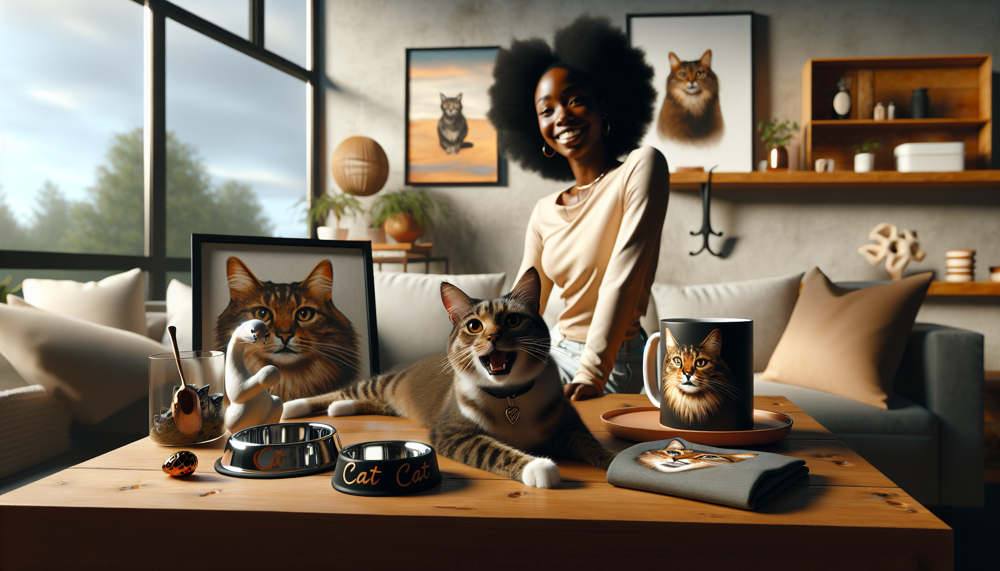

If you have ever shopped for cat lovers, you already know one thing is true: generic gifts rarely create the same excitement as something made just for their favorite furry companion. That is exactly why personalized cat products continue to stand out in the pet gift market. They feel thoughtful, memorable, and often become keepsakes that people proudly display, use every day, or give as heartfelt presents.
For pet owners, cat lovers, and gift shoppers, the appeal is easy to understand. A custom item transforms an everyday product into something emotional and meaningful. A mug with a beloved cat's face, an ornament with a pet's name, or a memorial item honoring a cherished companion instantly carries more value than a standard off-the-shelf product.
But not every custom pet item performs equally well. Some personalized cat products consistently attract attention, earn repeat purchases, and turn browsers into buyers. In this guide, we are breaking down the personalized cat products that actually sell, why they work, and what shoppers are really looking for when buying custom pet gifts.
Personalized pet products tap into something deeper than simple shopping. For many people, cats are family. That emotional connection makes custom items especially appealing because they celebrate a specific pet, not just cats in general.
These products also work beautifully for multiple types of buyers. Pet owners love them because they feel personal. Friends and relatives buy them because they make easy, meaningful gifts. Even dog lovers shopping for cat-owning friends often turn to personalized pet gifts because they know custom products feel more intentional and special.
Another reason these products sell well is that they fit so many occasions. Personalized cat products are popular for birthdays, holidays, Mother's Day, Father's Day, adoption anniversaries, housewarming gifts, and pet memorials. That year-round relevance gives them strong selling potential across seasons.
One of the most dependable categories in personalized pet gifts is custom drinkware. Personalized cat mugs, tumblers, and cups sell because they combine practicality with emotional appeal. People use them every day, and every sip becomes a reminder of a beloved pet.
Custom cat mugs are especially popular because they are affordable, easy to gift, and highly displayable in online listings. A mug featuring a cat's name, portrait, breed illustration, or funny pet-inspired phrase gives shoppers a gift that feels personal without being overly complicated.
These products also perform well because they appeal to a wide audience. Cat moms, cat dads, coworkers, friends, and family members all understand the charm of a custom mug. For Etsy shoppers, personalized mugs often hit the sweet spot between meaningful and budget-friendly.
The best-selling drinkware usually includes:
When a product is both useful and sentimental, it has a much better chance of becoming a top seller.
Custom cat ornaments are another category that actually sells consistently, especially during the holiday season. Buyers love ornaments because they are sentimental, easy to personalize, and ideal for gifting. Every year when the decorations come out, the memory tied to that pet returns too.
What makes personalized cat ornaments so effective is their emotional range. They can be playful and celebratory, featuring a cat's name and cute illustration, or deeply meaningful, especially in memorial form. That flexibility gives ornaments broad appeal among shoppers with different needs.
They are also a smart choice for gift shoppers who want something small but heartfelt. A personalized ornament feels special without requiring a large budget, which makes it an excellent stocking stuffer, secret Santa gift, or add-on present.
Popular ornament themes include:
Because ornaments are both decorative and emotional, they remain one of the strongest personalized cat product categories year after year.
One of the most meaningful personalized pet categories is memorial gifts. While this is a more sensitive niche, it is also one where customization matters enormously. When someone loses a beloved cat, a personalized memorial item can provide comfort, remembrance, and a way to honor that bond.
Memorial cat gifts that actually sell tend to be tasteful, simple, and heartfelt. Buyers are often looking for something that acknowledges grief while celebrating the pet's life. Personalized details like the cat's name, dates, image, or a short message make the item far more significant.
Common memorial products include framed prints, ornaments, keepsake boxes, candles, and custom plaques. These items are often purchased not only by pet owners but also by thoughtful friends and family members who want to give a compassionate gift.
To resonate with shoppers, memorial products should feel comforting rather than overly generic. Personalization creates that sense of intimacy and care that buyers are seeking during an emotional moment.
Shoppers do not only want decorative keepsakes. Functional personalized cat products often perform especially well because they blend everyday usefulness with custom charm. When buyers can personalize something they already need, the purchase feels practical as well as emotional.
Examples include personalized pet bowls, feeding mats, treat jars, blankets, and storage bins. These are products pet owners can use daily while still enjoying the special touch of their cat's name or likeness.
Functional items have another advantage: they often appeal to self-buyers. While ornaments and memorial pieces are commonly purchased as gifts, practical personalized products are frequently bought directly by pet owners who want to upgrade their home or pet routine.
Products in this category tend to sell best when they are:
Buyers love products that feel special without sacrificing function, and that is exactly why this category continues to grow.
Another group of personalized cat products that actually sell includes wearable items and photo-driven gifts. These products are visual, fun, and highly engaging, which makes them especially effective in online marketplaces like Etsy.
Custom cat bandanas, pet tags, shirts, tote bags, and socks featuring a cat's image can spark an instant emotional reaction. People love seeing their own pet represented in a stylish or playful way. That visual impact helps these products stand out in search results and social media posts.
Photo-based items are particularly powerful because they make the personalization obvious right away. A shopper does not have to imagine the sentimental value; they can see it. Whether it is a custom portrait on a tote bag or a pet photo turned into a home accessory, these products feel highly personal and often impulse-worthy.
This category is especially strong for:
When a product is both personalized and visually delightful, it has a strong chance of converting curious shoppers into happy customers.
Not every custom item becomes a bestseller. The personalized cat products that perform best usually share a few important traits. First, they are easy for shoppers to understand. If a buyer can immediately see what the product is, how it can be personalized, and why it matters, the product has a much stronger chance of selling.
Second, successful products combine emotional value with attractive design. Even a sentimental item needs to look polished, giftable, and well-made. Buyers want products that feel special enough to give and stylish enough to display.
Third, the strongest sellers often fit into a clear occasion or use case. Holiday ornaments, memorial prints, daily-use mugs, and practical home accessories all work because shoppers instantly know when and why they would buy them.
Here are some of the biggest factors behind strong-performing personalized cat gifts:
For shoppers, the ideal personalized cat product feels heartfelt, attractive, and easy to order. When all three come together, sales follow naturally.
Personalized cat products that actually sell are the ones that connect with real emotions and real everyday life. Whether it is a custom mug used every morning, an ornament hung year after year, a practical feeding accessory, or a memorial keepsake honoring a cherished pet, the most successful items are the ones that feel truly personal.
For pet owners, cat lovers, and gift shoppers, custom pet products offer something standard gifts cannot: a direct celebration of the bond between people and their pets. That is what makes them so memorable, so giftable, and so consistently popular.
If you are shopping for a unique gift or a special custom item for your own furry family member, personalized cat products are a beautiful way to turn everyday objects into meaningful keepsakes.
Shop personalized pet products at SnoutAndAbout on Etsy.